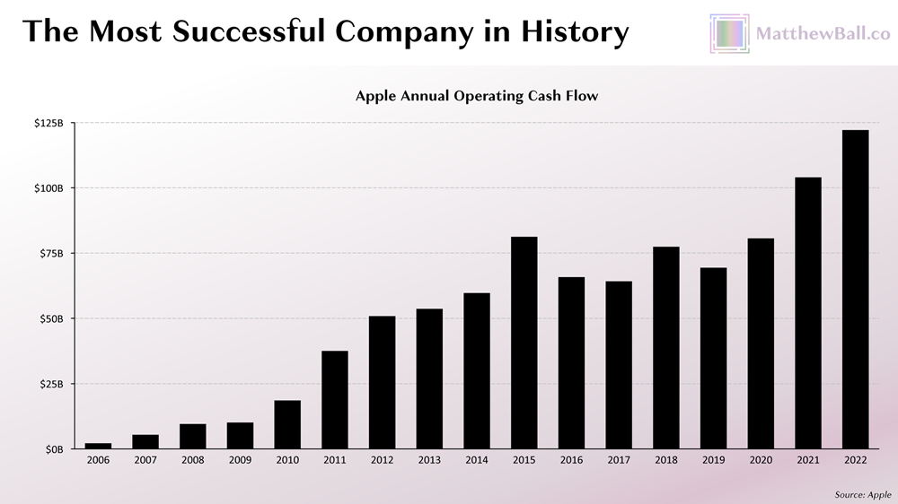
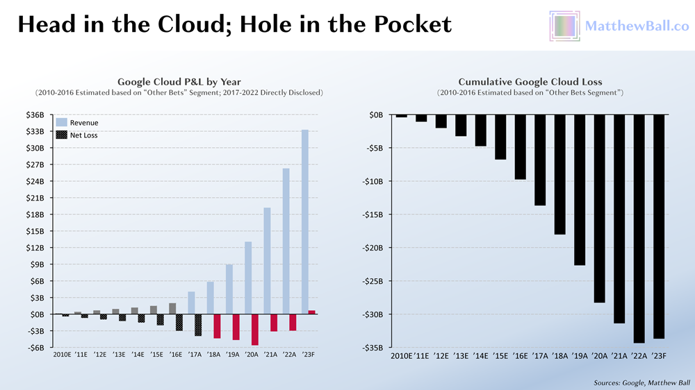

Here's an opportunity to talk about the tech industry narrowly (there's hype about humanoid robots) and broadly (there's eternal investor demand for platforms).
Mark Palko has been hard at work this month, laying out what's so frustrating about humanoid robots. You should read 'em all, but for the purposes of this post, here are some key quotes:
-
May 2, The Cylon Design Fallacy: "The Cylon design fallacy is that robots should be designed to interface with systems that were designed to interact with humans and systems designed to work with robots should interface with them in the same ways they would interact with humans.
"[...W]hy pick a design that is far more expensive and less efficient just so it can use tools that only look the way they do because they were designed for humans to use?
"[...]As for the argument that the same robot could go from working in a factory to cleaning your house, why would we want it to? You’ll be paying for functionality you don’t need and compromising on functionality that you do. And even if you insist on a one-size-fits-all model, what reason—other than the naivest of naive biomimicry—is there to believe that the sci-fi movie robot is the design you’d want to go with?"
-
May 5, Surprisingly, despite Elon Musk's involvement, this may turn out to be a scam.: "When the dust settles, hundreds of billions of dollars will have been wasted on an embarrassing techno-optimist hash of bad engineering, flawed economic reasoning, and hackneyed sci-fi tropes." Plus a big old roundup of tweets, just tomahawk dunking on the humanoid design.
-
May 6, A few years ago Morgan Stanley released an analysis promising that the metaverse would soon be worth more than $5 trillion dollars. Their latest one on humanoid robots may not rise to that level of prescience.: "There's no reason a robot with 5-fingered hands with opposable thumbs needs to be otherwise humanoid. Being bipedal is arguably the main driver of cost and complexity but it barely figures it all in the only reasons they give for going with the humanoid design."
-
May 15 and May 21, [delayed till below for reasons of poetic license]
All of the above is good and correct; read the posts and you will better understand the technology and the business of robotics.
But I'd like to explicitly introduce a term that doesn't appear in the above posts: platform. The hypothetical non-ignorant investor in humanoid robots will need a substantial dose of motivated reasoning to overcome/overlook the above. And with the word "platform" I can provide that hypothetical motivation. A successful platform is wildly lucrative, and investors have a long history of both (a) backing them even despite daunting realities of engineering and arithmetic, and (b) backing them for a very long time.
Matthew Ball published the longform explainer for platform investing in May 2023, "Big Tech’s Biggest Bets (Or What It Takes to Build a Billion-User Platform)":
[I]t’s notable that almost all of the most valuable companies in the world operate digital platforms that support billions of daily users and tens of billions of dollars in economic value daily. iOS is owned by the world’s most valuable company, Apple, while Android is owned by the number-three entrant, Google. Google also operates Google Search and Chrome, the top two platforms of the World Wide Web. The second-most-valuable company, Microsoft, owns Windows, the third-most-used operating system, as well as Azure, the second-most-used cloud infrastructure provider. The world’s fourth-largest company, Amazon, has a distant fourth-place OS, Fire, which runs on its tablets, TVs, and digital assistants (500MM+ total sold), but also the leading cloud service platform (AWS). Though not a strictly digital platform, it’s worth highlighting that three-quarters of Amazon’s e-commerce sales are through its third-party marketplace—an infrastructure platform[....]
[...I]t is the ecosystem that makes a platform so powerful. Not only does the ecosystem generate “rents” and provide extra value to users, it produces powerful barriers to market entry.
The specific platform everyone's chasing is that big one up front, iOS (chart from Ball):

Ball details how much money companies pour into would-be platforms, with Google Cloud (my most recent employer) as one example (emphasis Ball's):
2008 also saw Google launch Google Cloud, which the company viewed as both a strategic necessity and a lucrative commercial opportunity. Since then, net losses have hit nearly $35B. During this same time, AWS generated nearly three times as much in profit. In fact, 2022 was the first year Google Cloud’s topline exceeded AWS’s bottomline.
In contrast to Meta’s Reality Labs and Amazon’s Alexa investments, there is clear evidence of Google Cloud’s improving prospects. Annual losses have halved from their peak of $5.6B on $13B in revenue in 2020 (−43%) to $2.9B in 2022 (−11%), and in Q1 2023, the division booked its first profit, $191MM on 7.5B, or 2.6% margins. Most analysts expect the division to remain in the black going forward. Still, forecasts suggest Google Cloud won’t reach cumulative breakeven until the 2030s (it won’t be IRR positive until years later,). That’s a literal quarter century and not guaranteed, either.

One reason to hype humanoid robots, bipedalism and all, is to appeal to this platform play and imply these platform profits, so long as investors recognize that the precedent for platforms is "give us lots of money and don't ask for it back for a very long time." And investors go along with that, often!
Very often, this is a mistake -- Uber and Lyft were platform plays, and neither turned into the next iOS -- but there's just enough success stories that the motivated reasoning lives eternal.
Happily and predictably, Palko does detect this general-purpose-platform angle, and includes it in the fourth of five posts in the series (emphasis added):
- May 15, More on humanoid robots -- who ya gonna believe?: "Robotics is the future but in the foreseeable future, it's not going to be the kind of bipedal humanoid Swiss Army knife Tesla is supposed about to unveil. If there's a major breakthrough it could speed things up, but even under the best case scenario, serious people working in the field [who Palko includes by linking to this NPR segment --BG] will tell you we're years, possibly decades away[.]"
Both "bipedal" and "Swiss Army knife" are load-bearing parts of the hype-promise pitch. "Bipedal" (and the humanoid form factor generally) means avoiding what the Morgan Stanley report called "significant modifications to the workplace to accommodate" (link in Palko's May 6 post). The "Swiss Army knife" is the claim that they can use all the nice, pre-existing tools, and so they will be able to actually do work once they walk where they're meant to go.
And "decades away" -- that's still within, e.g., the Google Cloud time horizon.
All together, this is supposed to add up to a large base of humanoid robot customers, standardizing on the first mass-produced Bipedal Swiss Army Knife, in a positive feedback loop. Adoption costs will be low, and not just because the workplace already accommodates them. It will be easy to find the developers and mechanics needed to retool, retrain, and repair the humanoid robots, because the whole point of the platform is to grow a rich ecosystem around them. Just like it's straightforward to find iOS developers, compared to dead-ecosystem COBOL. That's the pitch.
Which brings us to the first direct conflict, in Palko's fifth of five posts (emphasis mine):
- May 21, Humanoid robots are the blockchain of 2025: "It has become embarrassingly commonplace to equate multipurpose robots with humanoids, despite the fact that there is absolutely no good reason— from an engineering or economic standpoint— to do so. In fact, it's just the opposite. [...F]or a given task, purpose built will always be better and cheaper."
Android and iOS have seen their platforms expand into the point-of-sale space. These touchscreen interfaces don't, I think, provide a good engineering reason to move into point-of-sale. They're so much flakier and laggier to use than good old purpose-built buttons. But there's a good economic reason: Androids/iOSes are everywhere. You can buy a new one overnight; you can find a contractor to retool them overnight, too.
The hype-promise is that humanoid robots will be like that, too. Worse than purpose-built, but good enough to be everywhere, so a nice, rich ecosystem of support to draw on to make it a cheaper/easier proposition.
You don't have to believe this hype-promise that a line of humanoid robots will ever be good enough to nucleate this kind of lucrative platform ecosystem. Plenty of promised platforms never actually spin up the way they implied they would, after burning billions of dollars trying. And you certainly shouldn't believe that Musk's Tesla is going to be the platform epicenter in the next few years. But it's still good to recognize the motivated reasoning at work.